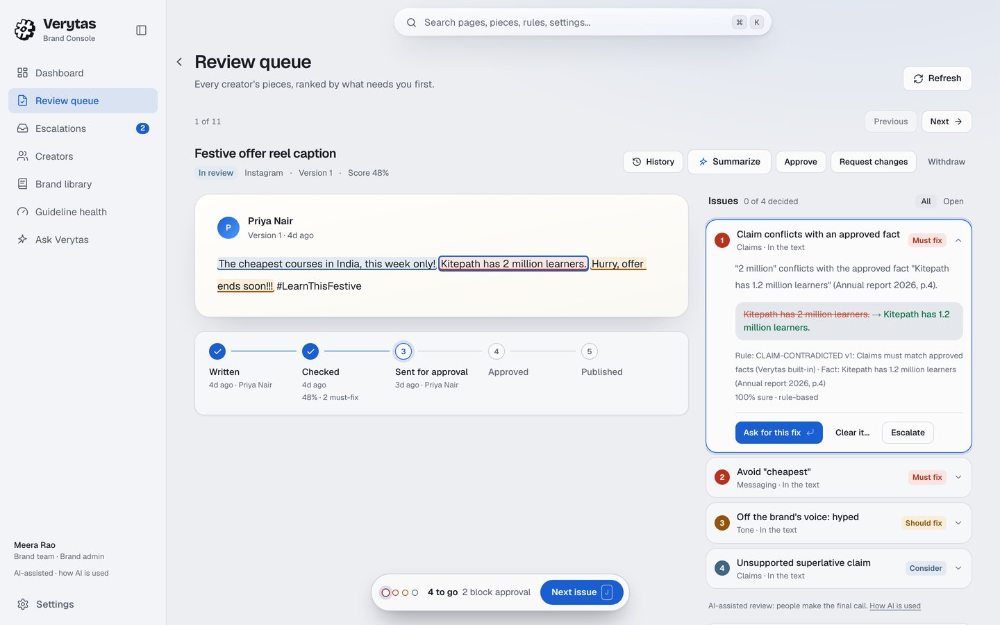
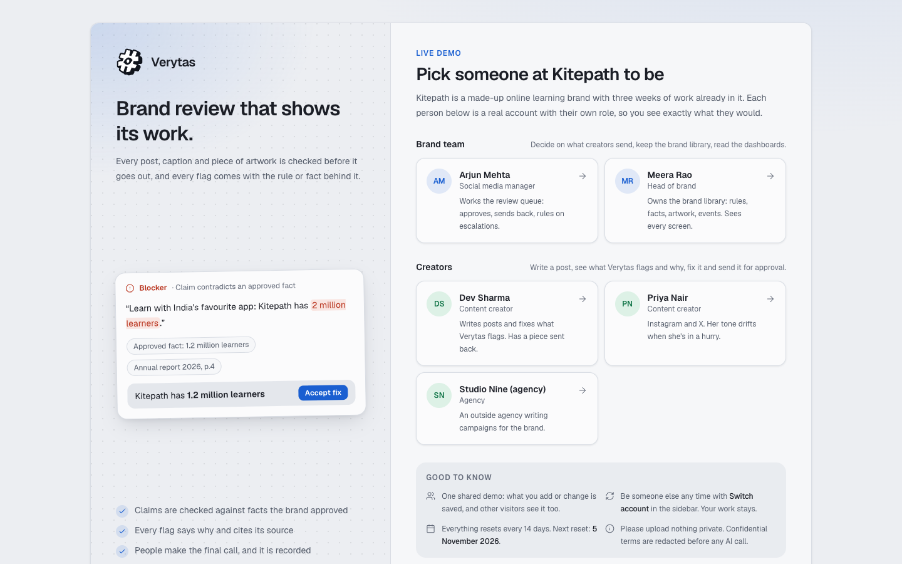
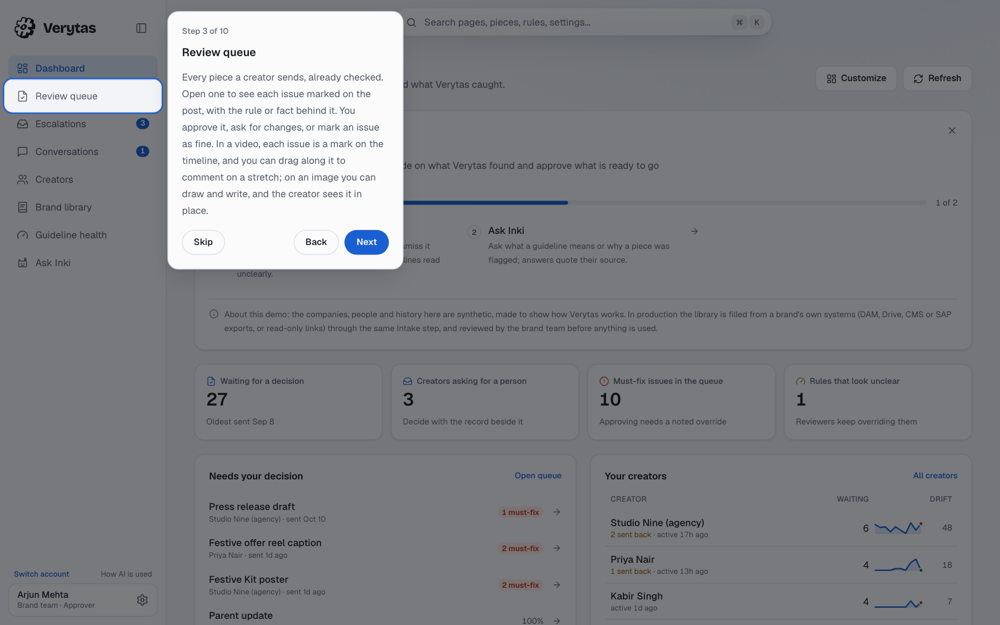

In Round 1 we planned a review gate that sits between a finished draft and publishing. It is now built, deployed and usable without help: a creator submits a post, Verytas finds and explains the problems, suggests fixes, and the brand team approves or sends it back, with every step recorded.
Open verytas.pages.dev, pick a person at Kitepath (a made-up online learning brand with eight weeks of history), and follow the short tour. Both sides of the workflow, creator and brand team, are one click apart.
| Round 2 cut line from our plan | Status | Where to see it |
|---|---|---|
| Brand-book import with approval; facts with dates; terms; artwork | Done | Library: Intake, Rules, Facts, Events, Contacts, Terms, Artwork |
| Submit a caption with images or a PDF; get cited findings with fixes | Done | My reviews (creator) |
| Claims, terms, tone, legal patterns, accessibility, confidentiality, palette and artwork checks | Done | Any review; "How it was checked" |
| Roles, states, comments, versions, overrides with notes | Done | Review queue (brand team) |
| Redaction, signed findings, audit chain; deployed demo | Done | Live site; audit log through the API |
We also delivered work planned for Round 3: video review, Hindi and Hinglish speech, cross-checks between the parts of a post, guideline health, creator drift profiles and calibrated confidence. Section 10 explains why, and Section 12 names three new improvements for Round 3.
The demo signs you in by picking a person, so judges can try both sides without creating accounts; signing up for your own empty workspace is also possible. A guided tour runs on the first visit to each side and can be replayed from Settings.

Everything below is finished and works on the live link. Items that are designed or only partly built are listed in Section 11, not here.
Two web apps share one codebase and one API. Prism, the review engine, splits each submission into parts and runs a check agent on each. Rules run in code first; models only judge meaning, and only after confidential terms are removed.
| Decision | Why |
|---|---|
| Rules before models | Facts, words, confidential terms, artwork and contrast are checked in code: free, instant and fully explainable. Models judge only meaning (tone, implied claims, sarcasm), and a finding from a model alone can never block a post. |
| Never silently pass | Every check reports its status. A timeout, an unreadable language or a model outage shows as "not checked" or "degraded" on the review, never as clean. |
| Heavy media stays local | OCR, speech to text, PDF rendering and artwork matching run on our server's CPU, so raw images and audio never leave it. Only redacted text and pixels reach a model. |
| Vision on a worker that sleeps | Finding redrawn mascots needs three image models, too heavy for the always-on server. They run on a second instance that the API starts when needed and that stops itself after 20 idle minutes, so it costs nothing most of the time. |
| Pull-based deploys | CI moves a live branch only when every check passes; the server pulls it with a read-only key, builds beside the running version, health-checks it and rolls back on failure. Nothing needs inbound access from CI. |
| Untrusted files in a sealed room | Word and PowerPoint previews need LibreOffice, a large program reading files strangers upload. It runs one file at a time, as a throwaway user, with no network and no view of the app's files, under memory and time limits. |
Everything the product depends on, as the brief asks: APIs, AI models, datasets, libraries, templates and external services.
| Layer | What we use |
|---|---|
| Frontend | Next.js 16 (App Router, React 19), Tailwind CSS 4, Zod; OpenUI to render generated answers in Ask Verytas |
| Backend | Python 3.12, FastAPI, SQLAlchemy 2 (async), SQLite with a Postgres-ready schema, Pydantic, httpx |
| Language models | gpt-oss:120b (claims, fixes, second look on must-fix rules) and gpt-oss:20b (typed judge questions) on Ollama Cloud, behind a provider interface that also supports TypeSafe Jev and Anthropic Claude |
| Vision models | gemma4:31b on Ollama Cloud for scene reading; Grounding DINO (tiny), SAM 2.1 (tiny) and DINOv2 (small) on PyTorch CPU for mascots; OpenCV SIFT, RANSAC and ECC for official artwork; YuNet and SFace for faces |
| Media, local | RapidOCR (PP-OCR on ONNX Runtime), faster-whisper, pdfium, pypdf, python-docx, PyAV, Pillow, NumPy, LibreOffice (sandboxed) |
| External services | Ollama Cloud (models and web search for claim research), Wikidata and Wikimedia Commons (a public portrait, only when a brief names someone and the content is not confidential), AWS EC2 in Mumbai, Cloudflare Pages, GitHub Actions, Let's Encrypt via Caddy |
| Security | Ed25519-signed findings, SHA-256 hash-chained audit log, text and pixel redaction, input guardrails, a content security policy, gitleaks, pip-audit, pnpm audit, hashed lock files, SHA-pinned model files where the source allows |
| Datasets | No third-party dataset. Every benchmark set is generated by our own seeded scripts or hand-labelled, and lives in the repository with its generator: 1,200 artwork scenes, 425 mascot scenes, 240 OCR images, 104 speech clips, 36 videos, 28 cross-check posts, 32 judgement sentences, 73 findings for fixes |
| Templates | None. The interface, the sample brands (Kitepath and three others) and their eight weeks of history were written for this project. |
Every model call goes through the redactor and a governor with retries, a shared pool of model slots, per-step deadlines and a circuit breaker per model, so a burst of uploads queues instead of failing. Two Ollama keys are held; a refused or exhausted key hands over to the second for ten minutes.
Each reviewer decision updates the rule's precision, the calibration curve and the warning floor. Every change to a learned value is written to the audit log with its before and after.
Five problems took most of the engineering. Each solution was measured before we kept it.
Text is split into single claims, and each is matched to approved facts that are valid on the publish date. Numbers, units and dates are compared in code; a model only decides whether a claim and a fact are about the same thing. A claim backed only by an expired fact is outdated, so "500+ teams" is caught after the approved figure became "800+ teams". Each verdict cites the fact it used.
Our first gate asked one question: is the message, call to action and audience the same? It blocked the very fixes some rules exist for, such as removing a dig at a competitor. We built an evaluation (73 findings, two graders that never grade their own output) and rebuilt the step: the model now picks an operation per finding (replace the words, rewrite the sentence, or delete a sentence that only mocks or pressures), sees the brand's own good and bad examples, and the gate asks narrow questions about the rule. A figure the creator never wrote is dropped by code. Useful fixes went from 45% to 82%, with no invented numbers.
Official logos are found by keypoints or template matching, then their placement is refined and read as stretch, skew or flip. Our first comparison checked the image against the artwork; comparing in the other direction, after warping the artwork into the image's pixels, cut false alarms from 12.6% to 4.7%. AI-redrawn mascots need open-vocabulary detection, segmentation and image embeddings, so they run on the sleeping worker, and Verytas names what changed rather than just "does not match".
The general speech model mishears much spoken Hindi. Rather than trust the transcript, confidential codenames are also matched by how they sound, and spoken numbers ("chalis pratishat") are read as figures, so a voice-over that says a price different from the caption is still caught.
Self-reported model confidence runs high. Our judge answers with a certainty band; borderline answers are asked twice more and averaged, and once enough decisions exist, confidence is mapped to how often reviewers actually agree (isotonic regression). We also tested a cascade that re-asked the large model only on close calls; it never fired, because the small model's mistakes came back at full certainty. Asking both models on must-fix rules was right on 30 of 32 sentences against 27.
Also hard: keeping the assistants' instructions private. Asking Ask Verytas for its prompt gets a fixed answer, and a reply that starts reciting its instructions is cut off before any of it is sent. Seven live attacks were refused on the deployed site.
Each engine is measured on its own benchmark through the production code. The sets are generated or hand-labelled rather than live traffic, so real-world figures will run somewhat lower. Full methods and results are in backend/evals/results.
| Engine | Tested on | Result |
|---|---|---|
| Official artwork | 1,200 scenes | 93% of misuse caught, 4.7% false alarms; recoloured icons still weak (33%) |
| Mascots | 425 scenes | Every character found; what changed named in 73% to 100% of cases for most changes, but a stretched body in only 23% |
| Text in images | 240 images | 88% of prices, codes and names read exactly; 0.5 s per image |
| Speech | 104 clips | About 10% word error in English on clips under three minutes (longer audio uses a faster model, about 17%); Hindi much weaker, so codenames are also matched by sound. Test voices are synthetic |
| Video | 36 videos | On-screen claims 11/11, spoken claims 8/10, artwork misuse 32/45, each at the right moment |
| Parts that disagree | 28 posts | 14/14 caught, 0 false alarms on the controls |
| Judgement rules | 32 sentences | 30/32 right with the second look, against 27/32 for the small model alone |
| Suggested fixes | 73 findings | 82% useful (45% before the rebuild), 0 invented numbers |
| Black-box simulator | 216 cases | 96% recall, 0% false alarms on clean posts |
blackbox/) knows Verytas only through its public API. It invents brands and posts with planted violations, scores what comes back, and steers each round toward what Verytas misses.docs/security/README.md.Three people outside the team (P1 to P3) used the deployed demo on their own and wrote up what worked and what did not. None works in brand governance, so this tests first-use clarity, not domain fit. All three know someone on the team, so we weigh their criticism more than their praise.
| What they hit | Who | What we changed |
|---|---|---|
| Could not tell what the product does or where to start | P1, P2 | The sign-in page explains Verytas with a real finding before the person picker; a guided tour on the first visit to each side, with Back, Next and Skip, replayable from Settings |
| "Draft", "100% Clean", "Escalation" unexplained | P2 | Every status, score and level explains itself on hover; the tour covers them; summaries use plain words |
| A clean result does not say what was checked | P1, P2, P3 | A clean result lists each check that ran, and which ran only in a simpler form or not at all |
| No sign that a review is running | P2 | A running review says what is being checked and how long it takes, beside the elapsed time; a review cut off by a restart now runs again |
| Empty pages with no next step | P2 | Each empty tab says why it is empty and what fills it |
| The review form asks for a lot at once | P3 | Only title, channel, text and files up front; the rest under More options |
| Cut-off text | P3 | Truncated names show in full on hover; titles wrap to two lines |
| "AI can make mistakes" lowers trust without context | P3 | Kept, and now says which checks are plain code, that every finding names its source, that a person decides, and the measured accuracy |
| Accuracy must be shown, not claimed | P1 | Measured per engine and published (Section 7); confidence shown on every finding |
What they liked: the interface and first impression, the separate creator and brand-team workspaces, and findings that say exactly which claim or figure is wrong and why. A teammate's pass over the creator side after that found a cramped review screen, buttons that read as plain text and a fix button that only worked at the end; all three are fixed. The reviews are in full in docs/research/user-testing.md.


A tool that reads a brand's unreleased plans and judges people's work has to be safe with both.
They are replaced by placeholders in text and blacked out in image pixels first, including a codename written without its "Project". Confidential-tier content is never sent as pixels at all.
Every finding is signed with Ed25519 when it is made, and every action is written to a SHA-256 hash-chained audit log that anyone with audit access can verify.
Fixes are never applied without a person choosing them. A model-only finding cannot block a post. Overrides need a written reason. Creators can dispute any reading.
File types are read from the bytes; archives and images are read within budgets; content under review is treated as data, never as instructions; bribes and "WhatsApp me" style contact swaps are refused before they are stored.
A face is identified only against the brand's approved people. A public portrait is looked up only when the brief names someone and the content is not confidential.
A page in the app lists which models run, what each one does, and their measured accuracy, including the weak spots. Each review lists the checks that ran and the models used.
The whole git history was scanned for secrets with gitleaks (none found). Keys live only in server files readable by the service. Dependencies install from hashed lock files, most model files are pinned by SHA-256 (the speech model by revision only, for now), and CI actions are pinned to commit SHAs.
We used Claude Code (Anthropic) as a coding assistant throughout development, for writing and reviewing code, tests and documentation. The team set the design, made every product and technical decision, reviewed what was produced, and tested the result. Inside the product, the models listed in Section 5 do the checking, and the app says so.
The direction is the same: a review gate before publishing, with cited findings and people in charge. What changed is the order of work and a few methods we replaced after measuring them.
| Change | Type | Why |
|---|---|---|
| Round 1's three improvements built now | Pulled in | Dated facts and leak checks turned out to be the core of claim checking, so they came first. Guideline health and calibrated confidence followed once reviewer decisions existed to learn from. All three work today, so Round 3 has three new improvements (Section 12). |
| Video, Hindi and Hinglish speech, cross-checks, mascots, decks and sheets | Pulled in | The brief's examples are social posts, video and Indian languages. A reviewer cannot trust a post whose video was not checked, so these moved from Round 3 to Round 2. |
| Guided tour and plain words | Added | Two of the three testers could not tell where to start, and one asked what the labels meant. We had planned interviews and task tests with a usability score; we ran written reviews by three first-time users instead, because they fit the time we had, and acted on every point. |
| Judge on free models | Replaced | We planned TypeSafe Jev. It is still supported behind the same interface, but the live demo uses gpt-oss on Ollama Cloud so it can stay up at no cost. |
| Second look instead of a cascade | Replaced | Re-asking the large model only on close calls never fired in testing. Asking both on must-fix rules was right on 30 of 32 against 27. |
| Fix check per rule | Replaced | The planned "same message, call to action and audience" check blocked fixes a rule exists to make. Checking against the rule took useful fixes from 45% to 82%. |
| Keyword fact lookup only | Simplified | Keyword search with tier and date filters was accurate enough for brand-sized fact lists, so vector search was not built. |
| SQLite on one server | Simplified | Keeps the demo running on credits. The schema is ready for Postgres. |
| MCP server, Slack, CMS hook, performance feedback | Deferred | Integrations matter less than a review people can trust. These stay on the roadmap after the three Round 3 improvements. |
Things a judge may run into, stated plainly.
| Area | What to expect |
|---|---|
| Recoloured app icons | An icon redrawn in other colours is caught about a third of the time. Stretched, mirrored, skewed and redrawn artwork is caught far more reliably. |
| Hindi speech | The speech model mishears much spoken Hindi. Codenames are still caught by sound and spoken figures are read, but a long Hindi voice-over is transcribed roughly. |
| Mascots on busy backgrounds | The cut-out takes in some background, so on busy backgrounds a correct mascot is wrongly flagged in about half of test scenes (53% to 63%, against 13% on plain ones). The vision model's opinion alone never blocks a post. |
| First mascot check after a quiet spell | The vision worker sleeps after 20 idle minutes, so the next review that needs it waits while it starts (up to about four minutes). If it does not start in time, that check is shown as not run. |
| Speed | Models run on a remote service without our own GPU. Text takes a few seconds; images, documents and video take longer. If the service is down or out of quota, those checks show as degraded, not passed. |
| Size limits | Documents are read up to 40 pages and decks up to 60 slides; the review says when the rest was not checked. Uploads are capped (images 6 MB, documents 20 MB, video 150 MB and 15 minutes). |
| One-on-one meetings | Shown in both apps and marked "Planned, not in this demo". Designed, not built. |
| Console screens | Approved people, marking moments in a video and findings on a video timeline are supported by the API but have no screens yet. |
| Shared demo accounts | Every judge signs in as the same sample people, so you may see pieces other visitors submitted. The demo data resets every two weeks. |
| Your own workspace starts empty | Signing up as a manager creates a new company with no rules, facts or artwork, so reviews find little until some are added (or a brand book is handed to Intake). Sign-ups and reviews per new workspace are capped per day to protect the model budget. The sample companies show everything working. |
| Integrations | The MCP server, Slack notifications, CMS hook and performance feedback from the original plan are not built. Brand events change rules but not yet facts, so a price change is still entered as a new fact. |
Each is new capability, sized for what two people can ship and measure in Round 3.
What it is. A creator asks the manager who looks after them for a meeting by chat, voice or video, from a review or from their profile. The manager accepts, or proposes another time or way. Voice calls go through temporary masked numbers, the way delivery apps connect a rider and a customer, so neither side sees the other's real number. Only the time, the way and an outcome note go on the record, linked to the pieces discussed.
What it changes. A disagreement that today goes back and forth in comments ("is this claim allowed?") is settled in one conversation, with the decision recorded against the review. Creators get a person, not only a queue, and phone numbers stay private.
What it is. Upgrades to the engines that are weakest today. Recoloured icons: a comparison that separates an icon's shape from its colours, so a correct icon in the wrong colours is caught. Hindi speech: a model trained for Hindi and Hinglish in place of the general one. A GPU server that wakes on demand to run the language and vision models ourselves, with the remote service as a fallback.
What it changes. Fewer missed issues and fewer false alarms on images and Hindi video, faster reviews, and brand content that no longer has to leave our servers to be checked. Each change is measured on the same benchmarks as today, and we publish the before and after.
What it is. Screens for work that today needs the API. An approved-people tab in the Library, where the brand team adds the people allowed to appear in content, with their agreement dates. A video player that shows every finding as a mark on its timeline and jumps to it. Tools for managers to mark a moment in a video or an area of an image and comment on it, which the creator sees in place.
What it changes. The brand team runs governance end to end without technical help. Reviewing a video becomes as direct as reviewing a caption, and feedback points at the exact second or region instead of describing it in words.
Both members committed from their own accounts, so contributions are visible in the repository history.
| Member | Contribution |
|---|---|
| Prajyot Malesh Kotekar Team leader | Led the team. Built parts of the agentic layer: Prism's parallel context layers, fixes judged together, and learned fix hints. Built parts of the web app: the brand team's console (dashboard, creator profiles and drift, brand library and brand-book import), the sign-in design, and web hardening (content security policy, cookies, read-only auditors). |
| Varadaraj J Borkar | Built all of the AI and the engines: the review engine and its checkers, the judge, fixes, claim verification, official artwork, mascots and vision, OCR, speech, video, cross-checks, redaction and the prompt guard, the choice of models and how they run, the benchmarks and the black-box simulator. Built the infrastructure: the AWS servers, the vision worker that wakes on demand, the sealed document converter, deploys and CI. Also the review screen, the guided tour, and the Verytas logo. |
| Together | The review workflow, the API, tests and documentation. |
| Live demo | https://verytas.pages.dev |
| Source code | https://github.com/varadarajjborkar/verytas |
| Architecture | docs/architecture.md |
| Benchmarks | backend/evals/results |
| User testing | docs/research/user-testing.md |
| Security review | docs/security/README.md |
| Round 1 plan | docs/round1/Verytas-Round1-Plan.pdf |